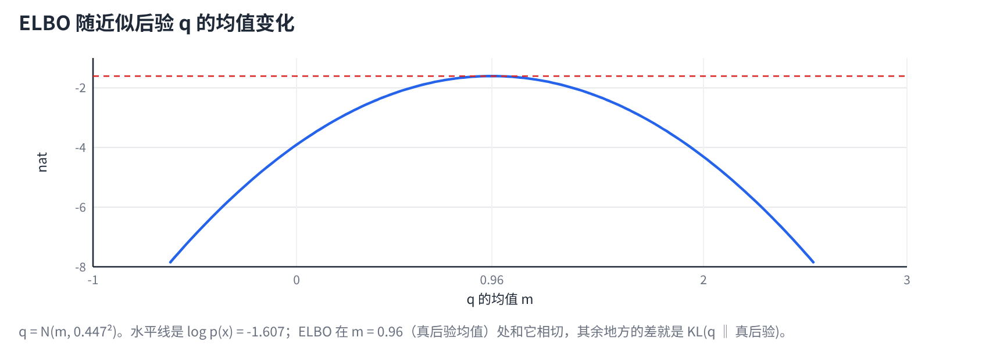
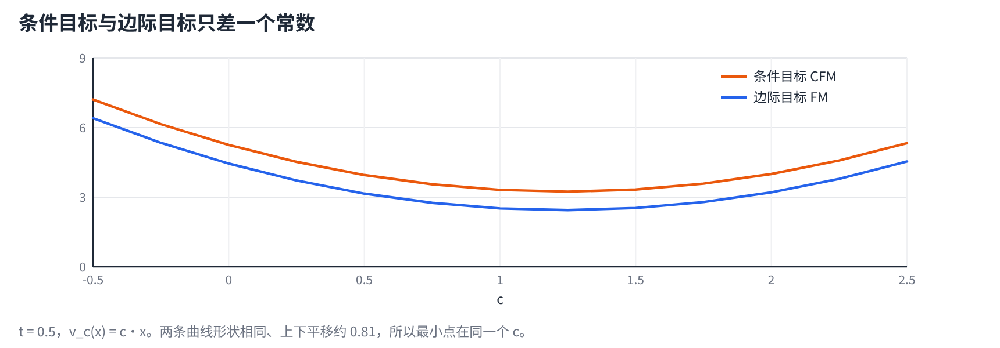
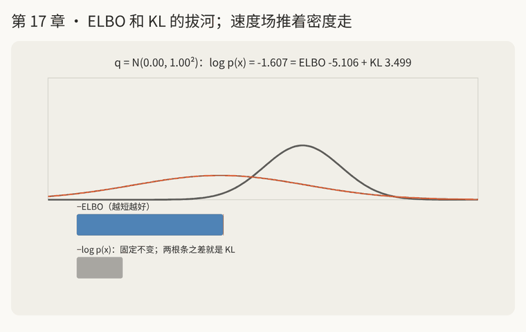

第 17 章 · 生成模型的数学：ELBO、两种梯度估计、连续性方程与 flow matching 目标
本地运行
git clone https://github.com/wikieden/math-and-eval-stats
cd math-and-eval-stats/code/notebooks
pip install jupyterlab torch numpy
jupyter lab ch17_generative_math.ipynb也可以下载后直接用 VS Code 打开 .ipynb 运行。需要 GPU 的章节在 Colab 里选「代码执行程序 → 更改运行时类型 → GPU」。
本章回答：VAE、扩散模型的 loss 为什么都叫 ELBO，它和真正想要的 log p(x) 差在哪？对"随机变量的期望"求梯度，重参数化和 score function 两种办法差在哪？flow matching 为什么可以只用"每一对样本的直线速度"来训练？
讲解日期：2026-11-25 · 上一章：第 16 章 蒙特卡洛与采样 · 下一章：第 18 章 3D 旋转与刚体变换
对应原文：Luo 2022diffusion-models/materials/text/papers/luo-understanding-diffusion-unified-2208.11970.txt"Evidence Lower Bound" L85–L200（式 15 L167）、重参数化 L253–L268；Flow Matchingdiffusion-models/materials/text/papers/flow-matching-2210.02747.txt式 (5)(9) 与定理 2 L140–L219；MIT 6.S184 讲义diffusion-models/materials/text/papers/mit-6s184-flow-matching-diffusion-notes-2506.02070.txt（连续性方程）
本章缩写：ELBO = Evidence Lower BOund（证据 / 下界：evidence 指 log p(x)）；q(z|x) = 近似后验（编码器）；KL = Kullback–Leibler 散度（第 10 章）；score function 估计 = 用 ∇ log p 做梯度估计（也叫似然比 / REINFORCE 估计）；v(x, t) = 速度场；FM / CFM = Flow Matching / Conditional Flow Matching（流匹配 / 条件流匹配）。全部缩写见 附录 · 缩写与术语表
讲解
第一步：ELBO：log p(x) = ELBO + KL(q ‖ 真后验)（2026-11-25）
类比：在一个看不见的房间里找钥匙，只能隔着墙估计。 真正想最大化的 log p(x) 算不出来（要对所有隐变量 z 积分）；ELBO 是它的一个下界，而且"差多少"有明确的意思：近似后验 q 离真后验多远。
（Luo 式 15，L167）KL ≥ 0，所以 ELBO ≤ log p(x)；q 正好等于真后验时取等号。
例子（一维模型：z ~ N(0, 1)，x | z ~ N(z, 0.5²)，观测 x = 1.2）：这个模型能算出精确答案：log p(1.2) = −1.6065，真后验 N(0.96, 0.4472²）。
| 近似后验 q | ELBO | log p(x) − ELBO | KL(q ‖ 真后验) |
|---|---|---|---|
| N(0.96, 0.45²)（= 真后验） | −1.6065 | 0.0000 | 0.0000 |
| N(0, 1²)（= 先验） | −5.1058 | 3.4993 | 3.4993 |
| N(1.5, 0.3²) | −2.4598 | 0.8533 | 0.8533 |
差值和 KL 逐位相等。所以"最大化 ELBO"一举两得：把 log p(x) 往上推，同时把 q 拉向真后验。

图 17-1 · 横轴是 q 的均值 m（s 固定为真后验的标准差）；水平线是 log p(x)，曲线是 ELBO，两者在 m = 0.96 处相切补基础：VAE 的 ELBO 两项（重建 + KL）从零讲起，见《从零读懂扩散模型》第 2 章；扩散模型把 ELBO 拆成每一步一项，见第 4 章。
一句话：log p(x) = ELBO + KL(q ‖ 真后验)；最大化 ELBO 同时抬高 log p(x)、拉近 q 和真后验。
第二步：对期望求梯度：重参数化 vs score function（2026-11-25）
类比：想知道"往左挪一点，平均分会变多少"。 一种办法是把随机性固定住、看每个样本怎么跟着挪（重参数化）；另一种是不挪样本，看每个样本的出现概率怎么变（score function）。
要估 \(\nabla_\mu\mathbb E_{z\sim N(\mu, 1)}[f(z)]\)：
| 方法 | 单样本估计 | 要求 |
|---|---|---|
| 重参数化 | \(z = \mu + \epsilon\)，\(\nabla_\mu f(\mu + \epsilon)\) | f 可导，分布能写成"参数 + 标准噪声" |
| score function | \(f(z)\,\nabla_\mu\log p(z;\mu) = f(z)(z - \mu)\) | 只要能算 log 概率的梯度；f 可以不可导（奖励、成功与否） |
例子（f(z) = z²，μ = 1，真梯度 2μ = 2，10 万个样本）：
| 方法 | 均值 | 单样本标准差 |
|---|---|---|
| 重参数化 | 1.998 | 2.00 |
| score function | 1.992 | 5.51 |
| score function + 基线（减去 E[f] = μ² + 1） | 1.994 | 4.28 |
两种都无偏，但重参数化方差小得多；score function 减基线能降方差（第 24 章的策略梯度就是 score function，所以 RL 要基线和优势函数）。VAE、扩散模型能用重参数化，因为高斯噪声可以"挪到外面"（扩散模型第 2 章第四步）。
一句话：重参数化把随机性挪到外面、对可导的 f 方差小；score function 只要 ∇log p、f 可以不可导，但方差大，要基线。
第三步：连续性方程：速度场推着密度走（2026-11-25）
类比：河里的墨水。 水流（速度场 v）推着墨水（密度 p）走；某处墨水变浓，一定是流进来的比流出去的多。
一维时 \(\partial_t p + \partial_x(pv) = 0\)。
例子：噪声 x₀ ~ N(0, 1) 和数据 x₁ ~ N(2, 0.5²) 之间连直线 \(x_t = (1-t)x_0 + t\,x_1\)。x_t 是高斯 N(2t, (1−t)² + 0.25t²)；能推出这条路径的边际速度场是 \(v = \mu'_t + \frac{\sigma'_t}{\sigma_t}(x - \mu_t)\)。用有限差分核对：
| (x, t) | ∂p/∂t | ∂(pv)/∂x | 相加 |
|---|---|---|---|
| (0.5, 0.3) | +0.44451 | −0.44451 | −7.9 × 10⁻⁸ |
| (1.5, 0.7) | +1.26942 | −1.26942 | −2.6 × 10⁻⁷ |
一句话：连续性方程 ∂p/∂t + ∇·(pv) = 0 说的是"密度的变化 = 净流入"；flow matching 学的速度场必须满足它。
第四步：flow matching 的目标：条件目标和边际目标只差常数（2026-11-25）
类比：要统计"每个路口车流的平均方向"，不必先算出这个平均；让模型对每一辆车都去预测它自己的方向，最小化平方误差，模型自然会学到平均。
想要的是边际速度场 v(x, t)（第三步），但一般算不出来。条件 flow matching 只用每一对 (x₀, x₁) 自己的直线速度 x₁ − x₀ 当目标（Lipman 式 9，L211）：
定理 2（L216）：两者对 θ 的梯度相同，因为它们只差一个和 θ 无关的常数。
例子（t = 0.5，一族 \(v_c(x) = c\cdot x\)，40 万个样本）：
| c | 条件目标 | 边际目标 | 差 |
|---|---|---|---|
| 0 | 5.2593 | 4.4470 | 0.8123 |
| 0.5 | 3.9622 | 3.1496 | 0.8127 |
| 1 | 3.3218 | 2.5088 | 0.8130 |
| 2 | 4.0111 | 3.1974 | 0.8138 |
差值几乎不变（变化来自蒙特卡洛误差，在千分位）：这个常数是"同一个 x_t 上各条直线速度的方差"，模型怎么学都消不掉（扩散模型第 12 章第四步说的 loss 的底）。

图 17-2 · 横轴 c，两条曲线是两个目标；形状完全相同，只是上下平移，所以最小点在同一个 c一句话：条件 flow matching 用每对样本的直线速度当目标，和算不出来的边际目标只差常数，梯度相同。
动画演示：ELBO 和 KL 的拔河；速度场推着密度走

可交互版：animations/17-generative-math.html（下拉切换"ELBO / 连续性方程"；滑块调 q 的均值和标准差、时间 t）。
怎么看：
- ELBO：上方是真后验和近似后验 q 两条曲线；下方一根柱子是 log p(x)，分成 ELBO 和 KL 两段；拖 q，两段此消彼长，总高度不变（第一步）；
- q 和真后验重合时，KL 段消失（第一步）；
- 连续性方程：t 从 0 播到 1，密度从 N(0, 1) 平滑地变成 N(2, 0.5²)，底下的箭头是速度场（第三步）。
练习与作答记录
题 1（第一步）：某个模型 log p(x) = −3.0，某个 q 的 ELBO = −3.4。KL(q ‖ 真后验) 是多少？如果换一个 q，ELBO 变成 −2.8，可能吗？
作答：（待作答）
题 2（第二步）：f(z) = 3z，z ~ N(μ, 1)。写出重参数化和 score function 的单样本梯度估计。重参数化估计的方差是多少？
作答：（待作答）
题 3（第三、四步）：在一维直线路径上，如果所有的 x₀ 都等于 0（噪声退化成一个点）、x₁ ~ N(2, 0.5²)，同一个 x_t 上还会有多条不同速度的直线经过吗？条件目标和边际目标之间的常数会变成多少？
作答：（待作答）
口诀
log p 等于 ELBO 加 KL，推高 ELBO 一举两得；
重参数化把随机挪出去，score function 只看概率，方差大要基线；
墨水跟着水流走，浓度变化等于净流入；
每辆车猜自己的方向，学到的就是路口的平均。
本章复习卡片
ST66（ELBO 的分解：log p = ELBO + KL）、ST67（重参数化与 score function 两种梯度估计）、ST68（连续性方程；条件与边际 flow matching 目标只差常数）。练习做完后，按答错、卡住的地方补上。
附录 · 延伸阅读
留给以后深入学习用，不影响本章主线。★ 是建议先读的。
推荐阅读
| 读什么 | 读哪里 | 读它为了什么 |
|---|---|---|
| ★ Luo 2022 | L85–L200；L253–L268 | ELBO 的两种推导；重参数化 |
| ★ Flow Matching（Lipman et al. 2022） | §3 L140–L230 | 边际 / 条件路径、定理 2 |
| ★ MIT 6.S184 讲义 | 连续性方程、Fokker–Planck 两节 | 连续性方程的推导与直觉 |
| 《从零读懂扩散模型》 | 第 2、4、9、12 章 | 这一章的每个公式在扩散模型里的完整用法 |
| 第 27 章 扩散模型推导、第 28 章 Flow matching 推导 | 全章 | 本章的深入篇 |
数学原理
- ELBO 分解的推导：\(\log p(x) = \mathbb E_q[\log p(x)] = \mathbb E_q[\log\frac{p(x,z)}{q(z)}] + \mathbb E_q[\log\frac{q(z)}{p(z\mid x)}]\)，第一项是 ELBO，第二项是 KL。
- score function 恒等式：\(\nabla_\theta\mathbb E_{p_\theta}[f] = \mathbb E_{p_\theta}[f\nabla_\theta\log p_\theta]\)，因为 \(\nabla p = p\nabla\log p\)；基线 b 不改变期望，因为 \(\mathbb E[\nabla\log p] = 0\)。
- 高斯路径的边际速度：\(x_t\) 是高斯 N(μ_t, σ_t²) 时，保持"标准化位置 (x − μ_t)/σ_t 不变"的速度场 \(v = \mu'_t + (\sigma'_t/\sigma_t)(x - \mu_t)\) 满足连续性方程。
- CFM 与 FM 只差常数：展开平方，交叉项 \(\mathbb E[(v_\theta - v)\cdot(v - (x_1 - x_0))]\) 在 x_t 上取条件期望后为 0（因为 \(v = \mathbb E[x_1 - x_0\mid x_t]\)），剩下的是 \(\mathbb E[\mathrm{Var}(x_1 - x_0\mid x_t)]\)。
公式清单
| 公式 | 意思 |
|---|---|
| \(\log p(x) = \text{ELBO} + D_{KL}(q\|p(z\mid x))\) | ELBO 分解 |
| \(\text{ELBO} = \mathbb E_q\log p(x\mid z) - D_{KL}(q\|p(z))\) | 重建 − KL |
| \(\nabla_\mu\mathbb E f = \mathbb E[\nabla f(\mu + \epsilon)] = \mathbb E[f\nabla\log p]\) | 两种梯度估计 |
| \(\partial_tp + \nabla\cdot(pv) = 0\) | 连续性方程 |
| \(\mathcal L_{\text{CFM}} = \mathcal L_{\text{FM}} + \text{常数}\) | 条件与边际目标 |
代码对照：把本章的数字用代码算一遍
代码在仓库本地
math-and-eval-stats/solutions/chapter-code/ch17_generative_math.py，配套测试tests/test_ch17.py：
bash cd math-and-eval-stats/solutions/chapter-code uv run python ch17_generative_math.py uv run pytest tests/test_ch17.py
讲义 ↔ 代码：
| 讲义 | 公式 | 写法 | 跑出来 |
|---|---|---|---|
| 第一步 ELBO | 闭式 | log_evidence()、elbo(m, s)、kl_gauss(...) |
−1.6065；差值 = KL |
| 第二步 梯度估计 | 重参数化 / score | grad_estimators() |
标准差 2.00 / 5.51 / 4.28 |
| 第三步 连续性方程 | 有限差分 | continuity_residual(0.5, 0.3) |
相加 −7.9e-8 |
| 第四步 FM vs CFM | 两个目标 | fm_vs_cfm() |
差 0.812–0.814 |
关键几行：
rec = -0.5 * log(2*pi*s_x**2) - ((x - m)**2 + s*s) / (2 * s_x**2) # E_q[log p(x|z)]，高斯有闭式
kl = 0.5 * (m*m + s*s - 1 - log(s*s)) # KL(q‖N(0,1))
reparam = 2 * (mu + eps) # ∇_μ (μ+ε)²
score = z**2 * (z - mu) # f(z)·∇_μ log N(z; μ, 1)
代码里才看得到的 3 件事：
- E_q[(x − z)²] = (x − m)² + s²：重建项的期望里多出的 s² 是 q 的方差，这一项让 ELBO 不喜欢太宽的 q。
- 连续性方程用中心差分：步长 h = 10⁻⁴，误差 O(h²) ≈ 10⁻⁸，所以残差在 10⁻⁷ 量级就算通过。
- FM 和 CFM 用同一批样本比：两种目标在同一批 (x₀, x₁) 上算，蒙特卡洛误差大部分抵消，差值才能稳在千分位。
自己改一改（不影响练习答案）：
- 把
SIG_X改成 0.1（观测很准），真后验变成什么样？先验 q = N(0, 1) 的 ELBO 差多少？ - 在
grad_estimators里把 f 换成 z⁴，重参数化和 score function 的方差各变成多少？